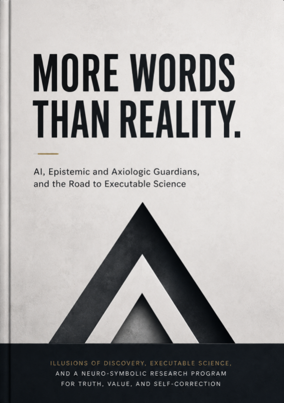

Executable Science · Axiologic Research Editions
More Words Than Reality
AI, Epistemic and Axiologic Guardians, and the Road to Executable Science
When machines can generate claims faster than reality can answer them, criticism and value judgment must become infrastructure.
The new scarcity is justified contact
Generative AI can produce hypotheses, architectures, equations, experiments, code and reviews at extraordinary speed. The danger named by this book is not language itself, but the widening gap between persuasive production and demonstrated connection to reality.
The proposed response is an ecosystem of executable science. An Epistemic Guardian asks what supports a claim, what would falsify it and whether the evidence survives independent criticism. An Axiologic Guardian asks which values, harms and decision rights are hidden inside a technically coherent programme.
Guardians without premature certainty
Executability is not truth. Code, workflows and formal proofs can expose structure, while fieldwork, instruments and human deliberation remain indispensable.
Criticism must gain independence. A critic generated by the same trajectory that produced a claim can reproduce its blind spots; provenance and alternative models matter.
Values belong inside the research object. Choosing a metric, benchmark or intervention already allocates attention and consequence.
The answer to an abundance of plausible discoveries is not less imagination, but stronger machinery for correction.
A research programme, not a finished platform
The book carefully separates published evidence, synthesis and research proposals. Its architecture is an invitation to prototypes, benchmarks, standards and institutional experiments that can show where automated scientific work becomes genuinely more trustworthy.